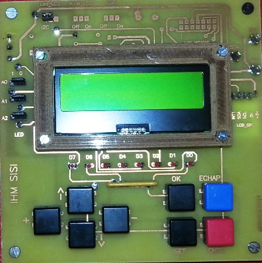

L'IHM SSI
L'Interface Homme Machine SSI se compose :
- d'un afficheur I²C 2x16 (MIDAS ou BATRON) à PCF2119,
- de huit leds et de huit boutons-poussoir connectés à deux PCF8574.

Les cartes NetDuino
Secret Labs
- Microcontrôleur : STM32F405RG 32 bits à architecture Cortex-M4 cadencé à 168 MHz.
- RAM : 100 KB (164+)*.
- Flash : 384 KB (1408KB)*.
- Port Ethernet : 10Mbps (Wifi:802.11b/g/n)*.
- E/S numériques : 22
- Entrées analogiques : 6
- Stockage: carte µSD
- IDE : Microsoft Visual Studio
- Framework : .NETMF 4.3
- Langages de programmation : C#, VB
 |
 |
| Netduino + 2 | Netduino 3 wifi* (compatible Gadgeteer) |
- Sites à consulter : Netduino, NETMF
- Distributeurs : Mouser Electronics
Classe IHMSSI
- Rôle: Contrôle les leds, les boutons-poussoir et l'afficheur de la carte SSI via un bus I²C.
- Espace de noms: ToolBoxes
- Assembly: IHMSSI, I2CLCD, PCF8574
Contenu du répertoire à télécharger
Le répertoire à télécharger (au format zip ou tar.gz) contient la solution IHMSSI composée :
- Du projet IHMSSI : le code de la classe IHMSSI.
- Du projet NetduinoIHMSSI : un exemple d'utilisation de cette classe.
Utilisation
- Ajouter le(s) assembly(s) dans le répertoire référence du projet et l'espace de nom ToolBoxes dans l'en-tête du fichier source.
- Créer un objet en utilisant un des constructeurs IHMSSI.
- Utiliser les propriétés associées aux LED et aux BP de l'intreface pour accéder individuellement aux méthodes des objets. Utiliser les méthodes de la classe IHMSSI pour les gérer collectivement.
Constructeurs
| Syntaxe | Description | |
 |
IHMSSI() | Instancie un objet "IHMSSI" composé :
Fréquence du bus: 100kHz Remarque: Initialisation du lcd et extinction des leds |
|
IHMSSI(PCF8574 leds, PCF8574 BPs, I2CLcd lcd) | Instancie un objet "IHMSSI" composé :
Paramètres: leds: objet PCF8574 BPs: objet PCF8574 lcd: objet I2CLcd Remarque: Initialisation du lcd et extinction des leds |
Propriétés
| Syntaxe | Description | |
 |
BpEchap |
Le bouton-poussoir Echap accède aux méthodes de la classe BP.
Exemple: if (Ihm.BpPlus.Read() == true) |
|
BpEnter | Le bouton-poussoir Enter accède aux méthodes de la classe BP. |
|
BpOk | Le bouton-poussoir Ok accède aux méthodes de la classe BP. |
|
BpSet | Le bouton-poussoir Set accède aux méthodes de la classe BP. |
|
BpMoins | Le bouton-poussoir - accède aux méthodes de la classe BP. |
|
BpPlus | Le bouton-poussoir + accède aux méthodes de la classe BP. |
|
BpFleBas | Le bouton-poussoir v accède aux méthodes de la classe BP. |
|
BpFleHaut | Le bouton-poussoir ^ accède aux méthodes de la classe BP. |
|
D0 |
La led D0 accède aux méthodes de la classe Led.
Exemple: if (Ihm.BpPlus.Read() == true) |
|
D1 | La led D1 accède aux méthodes de la classe Led. |
|
D2 | La led D2 accède aux méthodes de la classe Led. |
|
D3 | La led D3 accède aux méthodes de la classe Led. |
|
D4 | la led D4 accède aux méthodes de la classe Led. |
|
D5 | La led D5 accède aux méthodes de la classe Led. |
|
D6 | La led D6 accède aux méthodes de la classe Led. |
|
D7 | La led D7 accède aux méthodes de la classe Led. |
|
Lcd | L'afficheur Lcd accède aux méthodes de la classe LCDI2C. |
Méthodes
| Syntaxe | Description | |
 |
void BPsRead(out bool BPEchap, out bool BPEnter, out bool BPOk, out bool BPSet, out bool BPMoins, out bool BPFleBas, out bool BPFleHaut,out bool BPPlus) |
Renvoie l'état des huit boutons-poussoir. Vrai si appuyé, faux si relâché. |
|
void LedsOff() | Eteint les leds D7 à D0. |
|
void LedsOn() | Eclaire les leds D7 à D0 |
|
void LedsWrite(byte value) | Ecrit l'octet value sur les led D7 à D0. "0" => led éteinte, "1" => led éclairée |
Classe BP
Méthodes
| Syntaxe | Description | |
|
bool Read() | Renvoie l'état logique du bouton-poussoir. Vrai si actionné. faux si relâché |
Classe Led
Méthodes
| Syntaxe | Description | |
|
void Write(bool state) | Eclaire ou éteint la led . Vrai => led éclairée. faux => led éteinte |